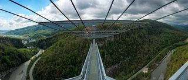
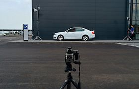
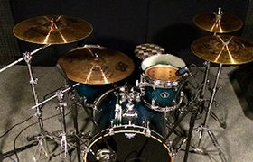
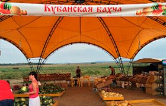
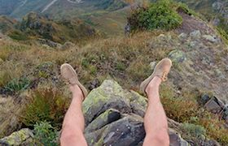

Загрузка и редактирование фотографий
Затмите их всех! Выкладывайте все, что накопилось в телефоне!
Взгляните на фотографии, которые выкладывают пользователи! Видите, как не хватает ваших?

Прыгать или нет? Напишите в комментарии свой совет и смотрите прямую трансляцию в перископе, задавайте свои вопросы!
Нравится: 215

Вчера он на луну летал, сегодня в руки к нам попал.
Нравится: 356

Соседи будут рады!
Нравится: 666
Здесь могла быть ваша цитата о высоком и вечном.
Нравится: 215

Самая кубанская в мире!
Нравится: 4

Где снег-то?
Нравится: 150
Всем GM и взаимные лайки!
Нравится: 2560
Затмите их всех! Выкладывайте все, что накопилось в телефоне!